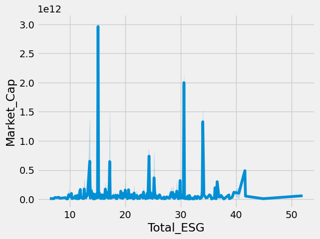

import pandas as pd
url_2024 = "https://bcdanl.github.io/data/esg_proj_2024_data.csv"
esg_proj_2024_data = pd.read_csv(url_2024)
url_2025 = "https://bcdanl.github.io/data/esg_proj_2025.csv"
esg_proj_2025 = pd.read_csv(url_2025)
esg_2025_dropd = esg_proj_2025.drop_duplicates(subset = ["Name"])
esg_2024_2025 = pd.merge(esg_2025_dropd, esg_proj_2024_data,on = 'Name', how = 'inner')
url = "https://bcdanl.github.io/data/stock_history_2023.csv"
stock_history_2023 = pd.read_csv(url)
esg_2025 = pd.read_csv("danl_210_stang_sophia_ESG.csv")
stock = pd.read_csv('danl_210_stang_sophia_stock.csv')Introduction
Background: Provide context for the research questions, explaining why they are significant, relevant, or interesting.
Sustainability in business is related to both environmental and societal effects of the company. Reinforcing sustainability initiatives is helpful in reducing climate change, income inequality, natural resource depletion, and many more important issues in our current world. In addition to this, sustainability is beneficial to the company itself, causing it to outcompete other less sustainable organizations. The benefits of being a sustainable business include protecting your brand, creating a purpose-driven company, and partaking in the growing sustainability market (Chladek, 2019).
##Statement of the Problem: Clearly articulate the specific problem or issue the project will address.
This project aims to determine which sectors and industries are most harmful to the environment and determine the connection between environmental safety and market growth. The project also will test whether environmental safety is related to the public controversy level of the industry.
# Descriptive Statistics
Set Up: Import packages and data
stock = stock.drop(columns = "Unnamed: 0")stock| Info | Date | Open | High | Low | Close | Adj_close | Symbol | |
|---|---|---|---|---|---|---|---|---|
| 0 | Mar 31, 2025 116.36 117.73 113.76 116.98 116.7... | Mar 31, 2025 | 116.36 | 117.73 | 113.76 | 116.98 | 116.73 | A |
| 1 | Mar 31, 2025 29.74 30.63 28.80 30.50 30.50 4,9... | Mar 31, 2025 | 29.74 | 30.63 | 28.80 | 30.50 | 30.50 | AA |
| 2 | Mar 31, 2025 10.41 10.68 10.06 10.55 10.55 66,... | Mar 31, 2025 | 10.41 | 10.68 | 10.06 | 10.55 | 10.55 | AAL |
| 3 | Mar 31, 2025 38.36 39.65 38.25 39.21 38.91 2,3... | Mar 31, 2025 | 38.36 | 39.65 | 38.25 | 39.21 | 38.91 | AAP |
| 4 | Mar 31, 2025 217.01 225.62 216.23 222.13 222.1... | Mar 31, 2025 | 217.01 | 225.62 | 216.23 | 222.13 | 222.13 | AAPL |
| ... | ... | ... | ... | ... | ... | ... | ... | ... |
| 620 | Mar 31, 2025 118.64 120.11 116.52 119.46 119.4... | Mar 31, 2025 | 118.64 | 120.11 | 116.52 | 119.46 | 119.46 | XYL |
| 621 | Mar 31, 2025 154.18 158.14 153.61 157.36 157.3... | Mar 31, 2025 | 154.18 | 158.14 | 153.61 | 157.36 | 157.36 | YUM |
| 622 | Mar 31, 2025 67.54 68.90 66.13 68.56 68.56 2,3... | Mar 31, 2025 | 67.54 | 68.90 | 66.13 | 68.56 | 68.56 | Z |
| 623 | Mar 31, 2025 111.37 113.64 111.37 113.18 113.1... | Mar 31, 2025 | 111.37 | 113.64 | 111.37 | 113.18 | 113.18 | ZBH |
| 624 | Mar 31, 2025 163.12 164.90 161.58 164.65 164.1... | Mar 31, 2025 | 163.12 | 164.90 | 161.58 | 164.65 | 164.10 | ZTS |
625 rows × 8 columns
esg_2025 = esg_2025.drop(columns = ["Unnamed: 0"])esg_2025| Year | Symbol | Name | Sector | Industry | Country | Market_Cap | IPO_Year | Total_ESG | Environmental | Social | Governance | Controversy | |
|---|---|---|---|---|---|---|---|---|---|---|---|---|---|
| 0 | 2025 | A | Agilent Technologies Inc. Common Stock | Industrials | Biotechnology: Laboratory Analytical Instruments | United States | 3.391867e+10 | 1999.0 | 13.6 | 1.1 | 6.4 | 6.1 | 2.0 |
| 1 | 2025 | AA | Alcoa Corporation Common Stock | Industrials | Aluminum | United States | 8.279121e+09 | 2016.0 | 24.0 | 13.8 | 5.9 | 4.3 | 3.0 |
| 2 | 2025 | AAL | American Airlines Group Inc. Common Stock | Consumer Discretionary | Air Freight/Delivery Services | United States | 7.325392e+09 | NaN | 26.4 | 9.9 | 11.6 | 4.8 | 2.0 |
| 3 | 2025 | AAP | Advance Auto Parts Inc. | Consumer Discretionary | Auto & Home Supply Stores | United States | 2.413841e+09 | NaN | 11.5 | 0.1 | 8.3 | 3.1 | 2.0 |
| 4 | 2025 | AAPL | Apple Inc. Common Stock | Technology | Computer Manufacturing | United States | 3.362691e+12 | 1980.0 | 17.2 | 0.5 | 7.4 | 9.4 | 3.0 |
| ... | ... | ... | ... | ... | ... | ... | ... | ... | ... | ... | ... | ... | ... |
| 620 | 2025 | XYL | Xylem Inc. Common Stock New | Industrials | Fluid Controls | United States | 2.965650e+10 | 2011.0 | 18.1 | 4.3 | 8.7 | 5.2 | 1.0 |
| 621 | 2025 | YUM | Yum! Brands Inc. | Consumer Discretionary | Restaurants | United States | 4.400042e+10 | NaN | 20.1 | 4.5 | 11.4 | 4.1 | 2.0 |
| 622 | 2025 | Z | Zillow Group Inc. Class C Capital Stock | Consumer Discretionary | Business Services | United States | 1.706396e+10 | NaN | 22.2 | 1.2 | 11.5 | 9.5 | 2.0 |
| 623 | 2025 | ZBH | Zimmer Biomet Holdings Inc. Common Stock | Health Care | Industrial Specialties | United States | 2.232493e+10 | NaN | 26.0 | 3.6 | 14.5 | 7.9 | 2.0 |
| 624 | 2025 | ZTS | Zoetis Inc. Class A Common Stock | Health Care | Biotechnology: Pharmaceutical Preparations | United States | 7.389462e+10 | 2013.0 | 18.8 | 3.2 | 6.8 | 8.7 | 2.0 |
625 rows × 13 columns
Merge All ESG Data
all_esg = pd.merge(esg_proj_2024_data, esg_2025, on = ["Year", "Symbol", "Name", "Sector", "Industry", "Country", "Market_Cap", "IPO_Year", "Total_ESG", "Environmental", "Social", "Governance", "Controversy"], how = "outer")all_esg| Year | Symbol | Name | Sector | Industry | Country | Market_Cap | IPO_Year | Total_ESG | Environmental | Social | Governance | Controversy | |
|---|---|---|---|---|---|---|---|---|---|---|---|---|---|
| 0 | 2024 | A | Agilent Technologies Inc. Common Stock | Industrials | Biotechnology: Laboratory Analytical Instruments | United States | 4.036543e+10 | 1999.0 | 13.6 | 1.1 | 6.4 | 6.1 | 2.0 |
| 1 | 2024 | AA | Alcoa Corporation Common Stock | Industrials | Aluminum | United States | 6.622136e+09 | 2016.0 | 24.0 | 13.8 | 5.9 | 4.3 | 3.0 |
| 2 | 2024 | AAL | American Airlines Group Inc. Common Stock | Consumer Discretionary | Air Freight/Delivery Services | United States | 9.088025e+09 | NaN | 26.4 | 9.9 | 11.6 | 4.8 | 2.0 |
| 3 | 2024 | AAP | Advance Auto Parts Inc. | Consumer Discretionary | Auto & Home Supply Stores | United States | 4.474665e+09 | NaN | 11.5 | 0.1 | 8.3 | 3.1 | 2.0 |
| 4 | 2024 | AAPL | Apple Inc. Common Stock | Technology | Computer Manufacturing | United States | 2.614310e+12 | 1980.0 | 17.2 | 0.5 | 7.4 | 9.4 | 3.0 |
| ... | ... | ... | ... | ... | ... | ... | ... | ... | ... | ... | ... | ... | ... |
| 1245 | 2025 | XYL | Xylem Inc. Common Stock New | Industrials | Fluid Controls | United States | 2.965650e+10 | 2011.0 | 18.1 | 4.3 | 8.7 | 5.2 | 1.0 |
| 1246 | 2025 | YUM | Yum! Brands Inc. | Consumer Discretionary | Restaurants | United States | 4.400042e+10 | NaN | 20.1 | 4.5 | 11.4 | 4.1 | 2.0 |
| 1247 | 2025 | Z | Zillow Group Inc. Class C Capital Stock | Consumer Discretionary | Business Services | United States | 1.706396e+10 | NaN | 22.2 | 1.2 | 11.5 | 9.5 | 2.0 |
| 1248 | 2025 | ZBH | Zimmer Biomet Holdings Inc. Common Stock | Health Care | Industrial Specialties | United States | 2.232493e+10 | NaN | 26.0 | 3.6 | 14.5 | 7.9 | 2.0 |
| 1249 | 2025 | ZTS | Zoetis Inc. Class A Common Stock | Health Care | Biotechnology: Pharmaceutical Preparations | United States | 7.389462e+10 | 2013.0 | 18.8 | 3.2 | 6.8 | 8.7 | 2.0 |
1250 rows × 13 columns
all_esg.info()<class 'pandas.core.frame.DataFrame'>
RangeIndex: 1250 entries, 0 to 1249
Data columns (total 13 columns):
# Column Non-Null Count Dtype
--- ------ -------------- -----
0 Year 1250 non-null int64
1 Symbol 1250 non-null object
2 Name 1250 non-null object
3 Sector 1250 non-null object
4 Industry 1250 non-null object
5 Country 1246 non-null object
6 Market_Cap 1250 non-null float64
7 IPO_Year 402 non-null float64
8 Total_ESG 1250 non-null float64
9 Environmental 1204 non-null float64
10 Social 1204 non-null float64
11 Governance 1204 non-null float64
12 Controversy 1146 non-null float64
dtypes: float64(7), int64(1), object(5)
memory usage: 127.1+ KBsectors = all_esg.groupby('Sector')["Total_ESG"].mean()sectors_df = pd.DataFrame(sectors)
sectors_df.sort_values("Total_ESG", ascending = False)| Total_ESG | |
|---|---|
| Sector | |
| Energy | 32.788000 |
| Utilities | 26.547619 |
| Consumer Staples | 26.359091 |
| Industrials | 23.678947 |
| Health Care | 22.815789 |
| Finance | 21.754737 |
| Basic Materials | 21.750000 |
| Telecommunications | 20.406250 |
| Consumer Discretionary | 19.588158 |
| Technology | 18.129577 |
| Real Estate | 13.880952 |
energy = all_esg['Sector'] == "Energy"
energy = all_esg[energy]
industry_esg = energy.groupby("Industry")["Total_ESG"].mean()
industry_esg| Total_ESG | |
|---|---|
| Industry | |
| Integrated oil Companies | 34.788889 |
| Natural Gas Distribution | 21.100000 |
| Oil & Gas Production | 33.815385 |
| Oilfield Services/Equipment | 22.950000 |
industry_market_cap = energy.groupby("Industry")["Market_Cap"].mean()
industry_market_cap| Market_Cap | |
|---|---|
| Industry | |
| Integrated oil Companies | 1.372203e+11 |
| Natural Gas Distribution | 8.637729e+10 |
| Oil & Gas Production | 2.829162e+10 |
| Oilfield Services/Equipment | 4.644217e+10 |
Controv_env = all_esg.groupby("Controversy")["Environmental"].mean()
Controv_env| Environmental | |
|---|---|
| Controversy | |
| 0.0 | 5.560000 |
| 1.0 | 5.136076 |
| 2.0 | 5.857762 |
| 3.0 | 6.397030 |
| 4.0 | 6.778571 |
| 5.0 | 9.600000 |
Exploratory Analysis Data Visualization
import seaborn as sns
import matplotlib.pyplot as plt
plt.style.use('fivethirtyeight')What sectors have the highest ESG scores and why might that be? How does that change across years?
sns.boxplot(data = all_esg,
y = 'Sector',
x = 'Total_ESG',
hue = 'Year')energy = all_esg['Sector'] == "Energy"
energy = all_esg[energy]What energy industries in the Energy Sector have the worst ESG scores?
sns.boxplot(data = energy,
y = 'Industry',
x = 'Total_ESG',
hue = 'Year')What are the market capitalizations of energy industries?
sns.boxplot(data = energy,
y = 'Industry',
x = 'Market_Cap',
hue = 'Year')What is the relationship between ESG scores and market growth?
sns.lineplot(data = all_esg,
x = 'Total_ESG',
y = 'Market_Cap')
Is there a clear relationship between environmental scores and controversy scores?
sns.boxplot(data = all_esg,
x = 'Controversy',
y = 'Environmental')Significance of the Project
The energy sector showed the highest ESG risk with an average score of 32.788. Among this sector, oil and gas production and integrated oil companies had the highest ESG scores. This is important because it shows that among the least sustainable sector, oil and gas are the least sustainable energy sources. Oil and gas production also showed the lowest market capitalization, demonstrating that its stock value is decreasing. This may drive more investment into more sustainable energy sources, and more investment into technology to develop them.
ESG scores and market capitalization did not show a clear relationship, however the highest market capitalizations were found at a low ESG score of about 15, suggesting that there is more value in more sustainable companies. This may be a result of the controversy levels and their relationship with envirnomental concerns. At very low levels of constroversy, environmental risks were consistently low. At very high levels of controversy, environmental risks showed a large range, but with the highest mean environmental risk score.
By supporting workers with equity, supporting environmental causes, and reducing environmental risk, industries will perform better. This information can also inform stockholders to invest in developing sustainable alternatives to harmful oil and gas production methods. This is important because it shows that to do well, a company must do right by the people and the planet.
# References
https://online.hbs.edu/blog/post/business-sustainability-strategies
Malene Comeau collaborated on sections data collection, project statement, some descriptive statistics, and some exploratory analysis.
Copilot was used to attempt to clean the stock data.